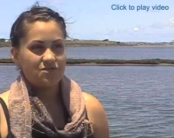
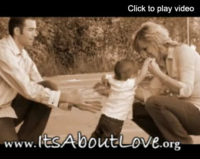
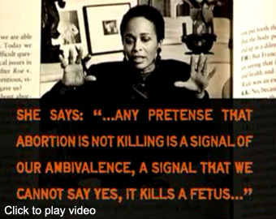

If you have a positive pregnancy test, you have three choices to consider:
Parenting
You may have more questions than answers about parenting or maybe the thought of becoming a parent seems impossible to you at this time. We've talked to hundreds of clients who are concerned about things like this: 
- My husband or boyfriend doesn't want the baby but I do
- (for men) My girlfriend doesn't want the baby but I do
- I can't tell my family
- How will I finish school?
- How will I continue working?
- Where will I live?
- I don't have medical insurance
- I can't afford a child
- I'm too young
We can talk about all these issues with you so you can decide if parenting is right for you.
We can even provide you with the skills necessary to understand and have a healthy pregnancy and baby. Call for your appointment. We’re here to serve you.
Adoption
You have lots of choices with adoption. Will it be open or closed? Will it be private or will you use an agency? You are in the driver's seat when making an adoption plan and there are lots of things to consider if you: 
- Don't want an abortion and aren't ready to be a parent
- Want to provide your child with a 2-parent family
- Want to provide your child emotional and financial stability.
In today's adoptions, you can know your child and be a part of your child's life. You can have the peace of knowing your child is loved and cared for by the couple you choose.
We can help you understand your options with adoption.
Abortion
If you're thinking about finding an abortion clinic, it is important to remember that abortion is a medical procedure. What type will you have? What are the risks? You deserve to know the facts. You owe it to yourself to make an informed decision. Perhaps you're thinking: 
- The father is insisting on an abortion
- I'm not ready to be a parent
- I can't tell anyone I'm pregnant
- Are you really pregnant?
- Is your pregnancy normal? Or are you at risk for natural miscarriage? Or do you have a tubal pregnancy requiring immediate medical attention?
- How far along are you?
You may also be interested in knowing:
- What kind of abortions are available to you?
- What are your rights with abortion providers?
- Are there any short-term or long-term risks to consider?
We can help you understand your choices, pregnancy, health and options.